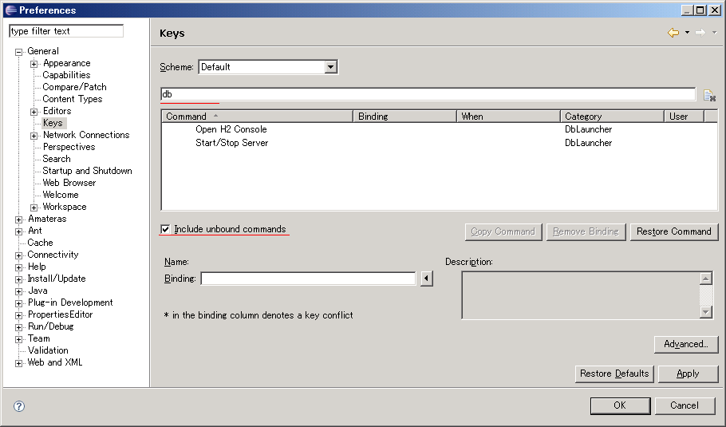

Customizing DbLauncher
Key Binding
Open the
General > Keys
preference page.
Select the
Include unbound commands
check box and input
db
into type filter text.

You may specify two commands.
Open Console
Start/Stop Server
Keys
 General > Keys preference page.
General > Keys preference page.